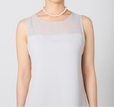
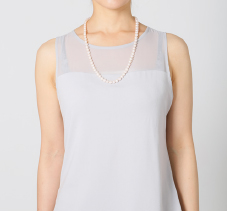
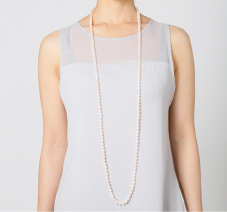

真珠の知識・メンテナンス 真珠の種類や品質評価項目について解説

ネックレスの種類と呼称
カラー
ドックカラーともいわれ、首輪のように首の中程度でぴったり留まる長さのこと、30～33センチ程度の長さを示す。
チョーカー

現在、ネックレスの基本の長さとされており、40～45センチ前後が一般的。冠婚葬祭から日常使いまで一般に最も流通の多い長さです。
マチネ

チョーカーの1.5倍の長さとなる60～65センチ、本来は昼用であったが夜会にも使用でき、フォーマル、ビジネス、カジュアルといろいろなシーンで着けられる便利な長さです。
オペラ
チョーカーの約2倍の80～90センチの長さのネックレスです。本来は夜会用。2連使用などアレンジがしやすく人気の長さです。
ロープ

チョーカーの約3倍の120～130㎝の長さとなるロングネックレス。二連や三連でのご使用は勿論のこと長さを生かした様々アレンジが楽しめます。